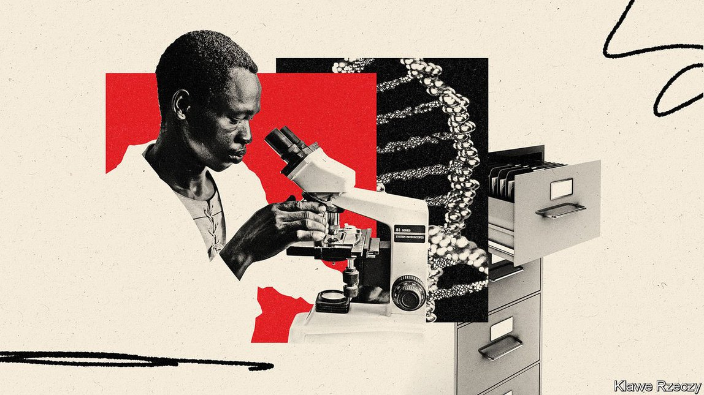

2021-07-31T14:53:49+00:00
Know thyself
【首文】认识你自己
【首文】認識你自己
Why the African genome project is so useful
为何非洲基因组计划如此有用
為何非洲基因組計劃如此有用
To map the ascent of man, begin at the beginning
描绘人类的前进之路，要追本溯源
描繪人類的前進之路，要追本溯源

RACISM MAY often run deep, but one of the most depressing things about it is how superficial it really is. In most parts of the world it is literally a matter of black and white. A person’s skin colour, however, has little biological significance. It is merely a balance between defending the lower layers of the dermis from cancer-causing ultraviolet light (which favours dark skin) and promoting the beneficial role of ultraviolet in the synthesis of vitamin D (which favours light skin). The farther someone’s ancestors lived from the equator, the paler their skin evolved to be.
种族主义或许经常是根深蒂固的，但它最令人沮丧的其中一点是它实际上极其“表面”。在世界上大部分地区，它真的就是个黑色与白色的问题。然而，一个人的肤色并没有什么重大的生物学意义。它只是在两种功能之间寻求平衡而已——保护真皮下层免受致癌紫外线的伤害（促成深色皮肤），以及促进紫外线在合成维生素D方面发挥有益的作用（促成浅色皮肤）。一个人的祖先住得离赤道越远，肤色就进化得越白皙。
種族主義或許經常是根深蒂固的，但它最令人沮喪的其中一點是它實際上極其“表面”。在世界上大部分地區，它真的就是個黑色與白色的問題。然而，一個人的膚色並沒有什麼重大的生物學意義。它只是在兩種功能之間尋求平衡而已——保護真皮下層免受致癌紫外線的傷害（促成深色皮膚），以及促進紫外線在合成維生素D方面發揮有益的作用（促成淺色皮膚）。一個人的祖先住得離赤道越遠，膚色就進化得越白皙。
Go back far enough, though, and everyone’s ancestors lived in Africa, the continent where Homo sapiens originated. Most non-Africans alive today trace the bulk of their ancestry to Africans who burst forth on an unprepared world about 60,000 years ago. Indeed, the oldest representative of the species yet found in Britain retained the dark skin of his African forebears. Africa is where humanity grew up—and where the bulk of human genetic diversity is found to this day.
不过，如果追溯得足够久远，每个人的祖先都曾居住在智人的起源地非洲。今天大多数非洲以外人群的血统大部分都源自非洲人，后者在大约六万年前突然出现在一个尚未发展完备的世界上。实际上，英国迄今为止发现的最古老人种的代表仍保留了其非洲祖先的黑皮肤。非洲是人类成长的地方，也是目前为止发现了大部分人类基因多样性的地方。
不過，如果追溯得足夠久遠，每個人的祖先都曾居住在智人的起源地非洲。今天大多數非洲以外人群的血統大部分都源自非洲人，後者在大約六萬年前突然出現在一個尚未發展完備的世界上。實際上，英國迄今為止發現的最古老人種的代表仍保留了其非洲祖先的黑皮膚。非洲是人類成長的地方，也是目前為止發現了大部分人類基因多樣性的地方。
Only now is a serious effort beginning to explore Africa’s genetic richness. Better late than never. The Three Million African Genomes (3MAG) project, a continent-wide endeavour, proposes to do for the place what has already been done for Europe, North America and parts of Asia—namely to catalogue and analyse the genetic diversity of those who live there. That will be scientifically fascinating, for it will help elucidate how H. sapiens evolved. But it will be medically important, too. It may even help erode that black-and-white excuse for racism.
直到现在人们才开始认真探索非洲在基因上的丰富性。迟做总比不做好。三百万非洲基因组计划（Three Million African Genomes，简称3MAG）覆盖整个非洲大陆，它提议在非洲开展已在欧洲、北美及亚洲部分地区完成的工作——编目和分析非洲居民的基因多样性。从科学的角度来看这项工作趣味无穷，因为它将有助于阐释智人的进化过程。但它在医学上也很重要。它甚至可能有助逐渐消除种族主义拿黑白肤色说事的借口。
直到現在人們才開始認真探索非洲在基因上的豐富性。遲做總比不做好。三百萬非洲基因組計劃（Three Million African Genomes，簡稱3MAG）覆蓋整個非洲大陸，它提議在非洲開展已在歐洲、北美及亞洲部分地區完成的工作——編目和分析非洲居民的基因多樣性。從科學的角度來看這項工作趣味無窮，因為它將有助於闡釋智人的進化過程。但它在醫學上也很重要。它甚至可能有助逐漸消除種族主義拿黑白膚色說事的借口。
Genetic diversity brings with it diversity of genetic disease. Cystic fibrosis—in any case rarer in Africa than in Europe—is often caused there by a different mutation from the one involved in the European version, and is thus missed by tests developed in the West. A mutation responsible in Ghana for 40% of inherited deafness is unknown in South Africa. And so on. It also brings a diversity of genetic response to disease. Some of the molecular details of the immune system, for example, vary with geography. Understanding that variation in Africa will improve understanding of immunity to infection, helping Africans and non-Africans alike.
基因多样性带来了遗传疾病的多样性。囊性纤维化在非洲总是比在欧洲更罕见，它在非洲通常是由与欧洲变体不同的突变引起，因此西方研发的检测手段测不出来。一种基因突变造成了加纳40%的遗传性耳聋，在南非却闻所未闻。还有很多例子。基因多种多样，对疾病的遗传反应也就多种多样。例如，免疫系统的某些分子细节会因地理环境而异。了解非洲的这种变异将增进对感染免疫力的认识，对非洲人和非洲以外的人都有帮助。
基因多樣性帶來了遺傳疾病的多樣性。囊性纖維化在非洲總是比在歐洲更罕見，它在非洲通常是由與歐洲變體不同的突變引起，因此西方研發的檢測手段測不出來。一種基因突變造成了加納40%的遺傳性耳聾，在南非卻聞所未聞。還有很多例子。基因多種多樣，對疾病的遺傳反應也就多種多樣。例如，免疫系統的某些分子細節會因地理環境而異。了解非洲的這種變異將增進對感染免疫力的認識，對非洲人和非洲以外的人都有幫助。
More genetic information will also cast light on evolution. Early H. sapiens migrants from Africa encountered other species of human being on their travels. These were descendants of previous migrations out of Africa of archaic members of the genus. At least two of these other types of human, the Neanderthals and the Denisovans, interbred with the newcomers, and some of their genes are still found in modern Asians and Europeans, doing various jobs including protecting them from disease. Preliminary analysis suggests that those who remained behind in Africa similarly interbred with yet another species of human—but one of which no fossil record remains.
更多的遗传信息还将帮助人们了解进化。早期走出非洲的智人移民在旅途中遇到了其他人种。这些人与非洲智人同属，是更早之前就迁出非洲的古代人种的后裔。在这些人种中，至少有尼安德特人和丹尼索瓦人这两种人与新来者杂交繁殖，他们的一些基因仍存在于现代亚洲人和欧洲人身上，发挥着抵御疾病侵害等多种作用。初步分析表明，留在非洲的人种同样也与另一人种杂交，但后者没有留下化石记录。
更多的遺傳信息還將幫助人們了解進化。早期走出非洲的智人移民在旅途中遇到了其他人種。這些人與非洲智人同屬，是更早之前就遷出非洲的古代人種的後裔。在這些人種中，至少有尼安德特人和丹尼索瓦人這兩種人與新來者雜交繁殖，他們的一些基因仍存在於現代亞洲人和歐洲人身上，發揮着抵禦疾病侵害等多種作用。初步分析表明，留在非洲的人種同樣也與另一人種雜交，但後者沒有留下化石記錄。
There is an irony in all this. Xenophobia has probably existed for as long as people have. But racist attitudes were reinforced in the 19th century by an enthusiasm for physical anthropology and eugenics. The former attempted to classify human beings on the basis of visible characteristics, such as skin colour, head shape and facial features, that are genetically inherited. If this had been a neutral analysis, it would have been unexceptional. But often it was not neutral. It not only classified, but ranked. White-skinned Europeans put themselves at the top—and black-skinned Africans at the bottom. Add eugenics to that mix and the result was toxic.
这一切颇具讽刺意味。仇外心理可能自人类诞生之日起就存在。但19世纪对体质人类学和优生学的热衷强化了种族主义态度。前者试图根据能通过基因遗传的可见特征为人类分类，如肤色、头形和面部特征。如果这是一种中立的分析，那就没什么大不了。但它往往不是中立的。不仅要分类，还要分等级。白皮肤的欧洲人把自己排在最高级别，让黑皮肤的非洲人垫底。再加上优生学，结果就贻害无穷了。
這一切頗具諷刺意味。仇外心理可能自人類誕生之日起就存在。但19世紀對體質人類學和優生學的熱衷強化了種族主義態度。前者試圖根據能通過基因遺傳的可見特徵為人類分類，如膚色、頭形和面部特徵。如果這是一種中立的分析，那就沒什麼大不了。但它往往不是中立的。不僅要分類，還要分等級。白皮膚的歐洲人把自己排在最高級別，讓黑皮膚的非洲人墊底。再加上優生學，結果就貽害無窮了。
The 3MAG project will not, alone, overthrow the legacy of these misadventures and the prejudices they reinforced. The thinking that gave rise to them is still too deeply ingrained in too many minds for it to do that by itself—even, probably, for it to come close. But to those whose minds are open, a group of 21st-century African scientists revealing that the true, glorious genetic diversity of human beings lies in their own continent more abundantly than in any other will be a superb rebuttal to the doctrines of those misguided Victorian European gentlemen. ■
单凭3MAG计划无法推翻这些灾难性研究的遗留问题和因它们而加深的偏见。产生这些问题的思想在太多人的头脑中仍然根深蒂固，所以单靠这项计划本身无法根除这些——甚至很可能连边都够不到。但对于思想开明的人而言，由一群21世纪的非洲科学家来揭示出人类真正的、辉煌的基因多样性丰富存在于他们自己的大陆上——多过其他任何大陆，将是对那些维多利亚时代的欧洲绅士们误入歧途的学说的绝佳反驳。
單憑3MAG計劃無法推翻這些災難性研究的遺留問題和因它們而加深的偏見。產生這些問題的思想在太多人的頭腦中仍然根深蒂固，所以單靠這項計劃本身無法根除這些——甚至很可能連邊都夠不到。但對於思想開明的人而言，由一群21世紀的非洲科學家來揭示出人類真正的、輝煌的基因多樣性豐富存在於他們自己的大陸上——多過其他任何大陸，將是對那些維多利亞時代的歐洲紳士們誤入歧途的學說的絕佳反駁。